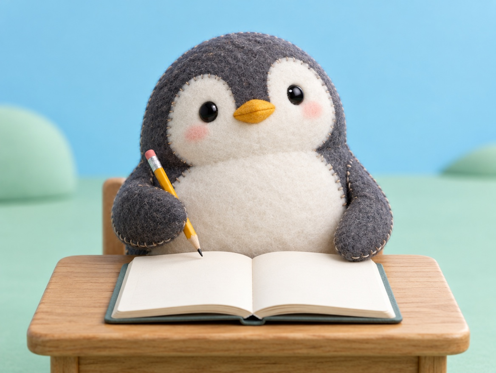

📝 DRAFT · 下書き — まだ本番に出していません · 下書き一覧
🐧 EVERYDAY LIFE⚡ 20 SEC
Argue back at your gloomy thought as if you were another person 📓

A Notebook
The psychologist Martin Seligman suggests a notebook for arguing back at dark thoughts.
Step 1
First, write the event and the thought that came to you.
Step 2
Next, pretend to be another person, and argue back at the thought with all your power.
Step 3
Last, write how your mood changed.
⚡ TRY IT
The 3-step notebook
📅 What happened: At the station, I bumped into someone's shoulder, and they clicked their tongue.I made a big mistake when I spoke English.I forgot my umbrella and got wet.
💭 Gloomy thought: "I am always so clumsy. I am no good.""I am terrible. Everyone thinks I am stupid.""I ruin everything. Today is over."
✍️ Pretend you are another person. Argue back!
😶 Hmm, that only agrees with the gloomy thought.💨 That is running away, not arguing back.🎯 Great argument! You talked like a kind friend.
Mood:
20%
📓 Pages done: 0/3
🌤️ 3 pages done! Arguing back is getting easier.
Best Practice
It seems that practice in arguing back is the best way to become positive.
📚 I learned this from the Japanese blog "Panda no Ondo".